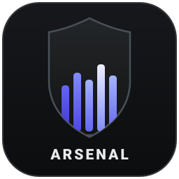

Design Arsenal / ترسانة التصميمهذه الصفحة عرض حيّ لما تدمجه حزمة design-arsenal (14 وحدة داخل أداة واحدة): انتقالات transitions.dev بأكوادها الأصلية الموثقة، حركة GSAP، أنماط مكوّنات React Bits معاد بناؤها بـ JavaScript خالص، وقواعد الذوق من taste وimpeccable مطبّقة على التصميم نفسه — والوحدات الأصلية السبع لها استوديو تفاعلي في صفحة ثانية.
كل مثال هنا منسوخ من الملفات المرجعية في skills/transitions/transitions-dev/ مع رموز الحركة الموحدة (_root.css) وحارس prefers-reduced-motion كما تطلب المهارة حرفيًا.
المصدر: Jakubantalik/transitions.dev — 43+ انتقالًا ضمن الحزمة.
تكبير من 0.96 مع تشويش خروج عند الإغلاق — النمط المرجعي رقم 06.
دخول من الأسفل مع تشويش، وإغلاق أسرع من الدخول — النمط رقم 22.
انزلاق قطري مع ارتداد نابض عند الظهور — النمط رقم 03.
دوران 80° مع تشويش 10px وارتداد ثم رسم المسار — النمط رقم 10.
تبادل blur مزامَن بين الهيكل والمحتوى في الاتجاهين — النمط رقم 14.
تم الكشف بعد 400ms — نفس المدة في الدرج والخروج، فتُقرأ الحركة كتبادل واحد.
خطوط تفكير تتدفق داخل قناع أطراف متلاشٍ — النمط رقم 29 لحالات «الذكاء الاصطناعي يفكر».
وحدات GSAP الثمانية ضمن الحزمة تعلّم الوكيل كل شيء من tweens الأساسية إلى ScrollTrigger والتمرير المثبّت. هذه أمثلة حيّة تُقرأ بأفضل إعداداتها: تخفيف power3.out وتماهد مدروس.
المصدر: greensock/gsap-skills (رسمي) — الأمثلة الجاهزة في examples/gsap/
الحزمة تتضمن 218 مكوّنًا بنكهتي TS-CSS وTS-Tailwind مع كتالوج آلي. أنماط البطاقات الثلاثة أدناه تعيد بناء فكرة GlareHover بـ JavaScript خالص — مرر المؤشر وشاهد التلألؤ يتبعك.
المصدر: DavidHDev/react-bits — انسخ من ts-tailwind/ أو ts-default/ أو استخدم سجل @react-bits
Aurora وParticles وHyperspeed وSquares — خلفيات كاملة الأقسام بشيفرة أصلية قابلة للنسخ.
SplitText وBlurText وShinyText وCircularText — عناوين تفتح نفسها بدقة حرفية.
Carousel وDock وMagnet وSpotlightCard وCounter — تفاصيل دقيقة تصنع الفرق.
وحدات كُتبت خصيصًا لهذه الحزمة ولا تُنسخ من مشروع خارجي: كل بطاقة أدناه تفتح القسم التفاعلي المقابل في showcase.html حيث تُطبّق الوحدة على نفسها.